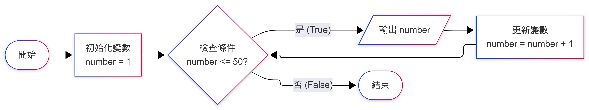

第四堂：while 循環與自動化任務
中三級電腦科 | 讓重複工作變得輕鬆
讓電腦重複執行相同的工作，無需人工干預。
🔄 省時間： 3 行代碼完成 100 次操作
🎯 零錯誤： 電腦不會累，不會出錯
💪 大規模： 輕易處理數千筆數據
只要條件成立，就重複執行程式碼：
⚠️ 注意： 一定要有讓條件變為 False 的程式碼，否則會變成「無限循環」！
在 Python 中，f-string 是一種方便的字符串格式化方法：
🎯 重點： 在字符串前加上 `f`，然後用 `{}` 包裹變數名，Python 會自動替換成變數的值！
跟著老師一起做，學會 while 循環的基本用法：
💡 小技巧： 可以用 `number += 1` 代替 `number = number + 1`，更簡潔！
了解 while 循環的執行邏輯：

💡 重點： 流程圖幫助我們理解程式的執行順序，條件成立時執行循環內容，條件不成立時退出循環。
使用 while 循環印出 7 的乘法表：
📝 練習： 把 7 改成其他數字，例如 3 或 9，看看結果！
❌ 無限循環： 忘記更新計數器，導致程式永遠跑不完。
❌ 縮排錯誤： 循環內的程式碼沒有正確縮排。
❌ 變數名稱錯誤： 不小心打錯變數名，導致循環無法正常運作。
✅ 避免方法： 先寫小例子測試，確認邏輯正確後再擴展。
融合前三堂所學，製作一個自動化成績評級系統：
🎯 任務要求：
跟著老師一步步完成：
製作一個可以重複使用的計算器：
💡 學習重點： `break` 語句可以隨時跳出循環。
你已經學會了如何讓電腦自動工作！
學習更簡潔的循環方式，處理一系列數據！
記住：循環是自動化的關鍵，多練習就能掌握！